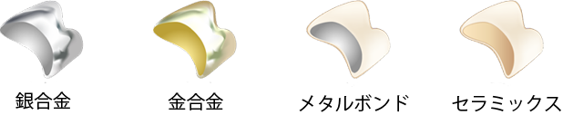

自由診療について
当院では、世界中から高い評価を得ているスウェーデンの
アストラック社のインプラントを使用しています。
永久歯を失うと、以前であれば「ブリッジ」や「入れ歯」などを用いるしか、
その部分を補う方法はありませんでした。
しかし、「ブリッジ」では隣の歯を削らなければいけませんし、
「入れ歯」だとうまくかめない、
違和感が強いなど、満足な結果が得られないことも多くありました。
このように歯を失ってお悩みの方に、インプラント治療をお勧めします。
インプラント治療とは、失ってしまった自分の歯のかわりに、
人工の歯の根をあごの骨に埋め込み、その上に人工の歯を作製してかみ合わせを回復する治療法です。
骨にしっかり固定されるのでガタついたりせず、自分の歯のように噛めるようになります。

クラウンの種類
クラウンの種類

虫歯の治療などで削った歯に被せる人工歯。
保険診療の治療がお元練っていますが、虫歯の範囲が広く、
強度の問題などで詰め物ができない場合などにクラウンによる治療を行います。
金属製や歯の色に近いセラミックス製などがあります。